wiki/ask_secondb_from_wiki_cta_v2.svg
wiki/page_content_block_v2.svg
wiki/related_nodes_panel_v2.svg
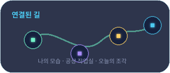
wiki/wiki_header_v2.svg
wiki/wiki_page_card_v2.svg
wiki/wiki_page_detail_header_v2.svg
wiki/wiki_search_bar_v2.svg
records/record_detail_card_v2.svg
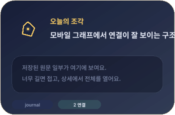
records/record_graph_link_panel_v2.svg
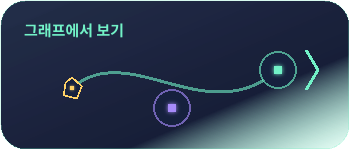
records/record_row_v2.svg
records/records_header_v2.svg
records/source_trace_card_v2.svg
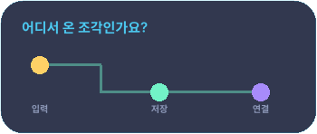
search/filter_chip_v2.svg
search/saved_filter_panel_v2.svg
search/search_result_card_v2.svg
widgets/record_timeline_v2.svg
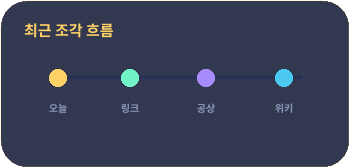
widgets/wiki_empty_state_v2.svg
widgets/wiki_graph_mini_map_v2.svg
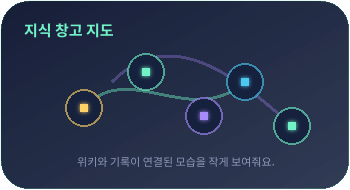
icons/chat.svg
icons/clock.svg
icons/file.svg
icons/filter.svg
icons/folder.svg
icons/graph.svg
icons/link.svg
icons/memo.svg
icons/open.svg
icons/pin.svg
icons/record.svg
icons/search.svg
icons/source.svg
icons/spark.svg
icons/tag.svg
icons/wiki.svg
mockups/mobile_record_detail_390x844.svg
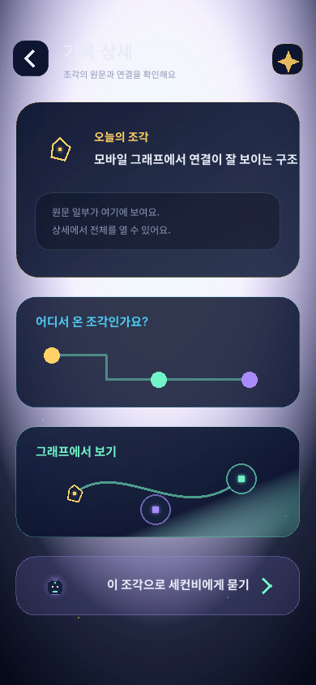
mockups/mobile_records_browser_390x844.svg
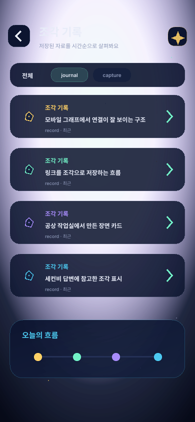
mockups/mobile_search_results_390x844.svg
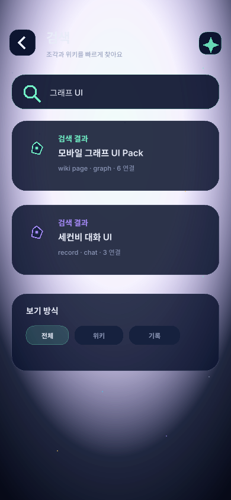
mockups/mobile_wiki_empty_390x844.svg
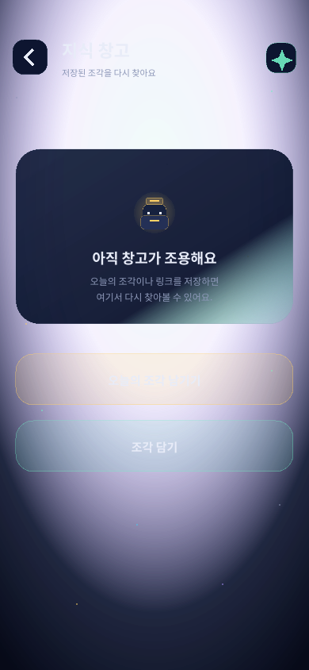
mockups/mobile_wiki_home_390x844.svg
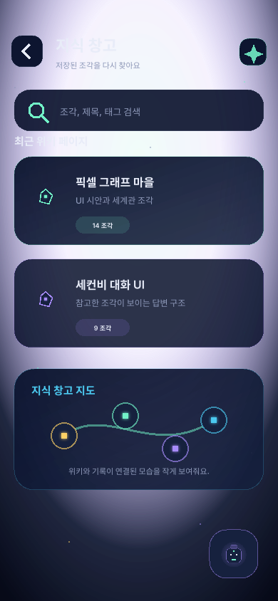
mockups/mobile_wiki_page_detail_390x844.svg
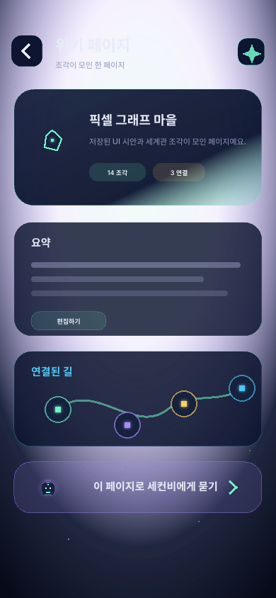